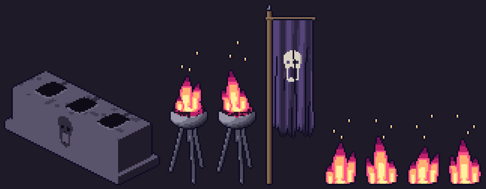
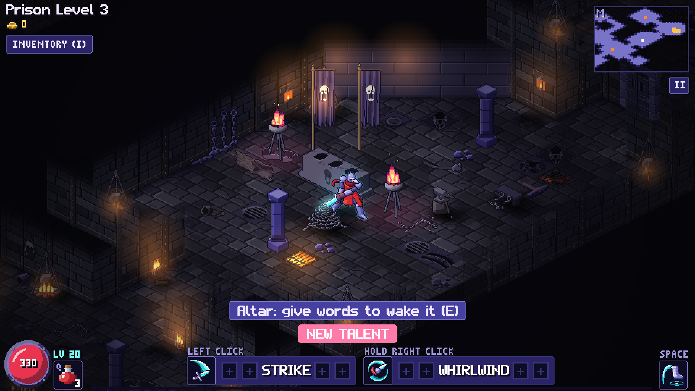
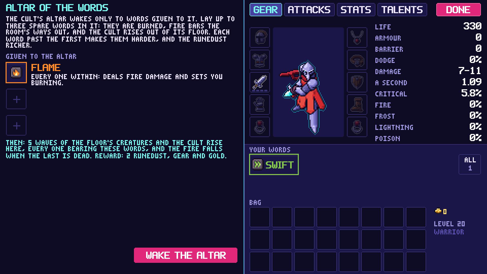
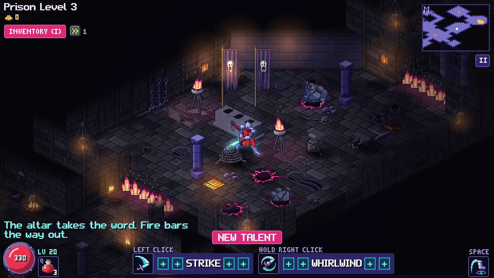
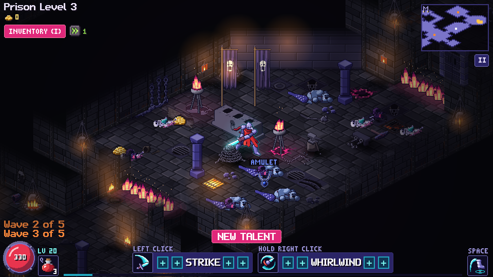
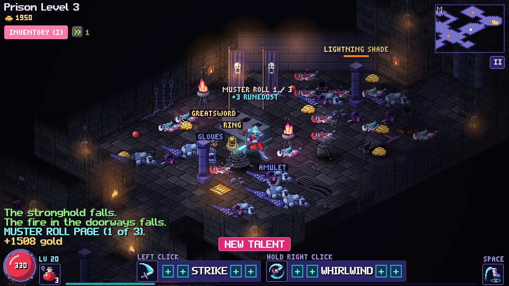
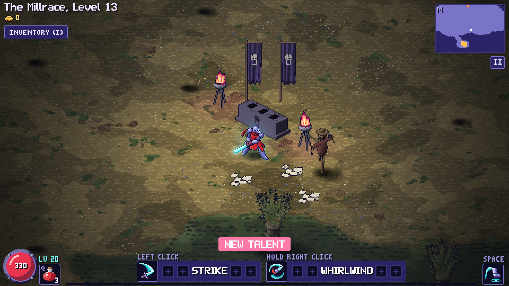
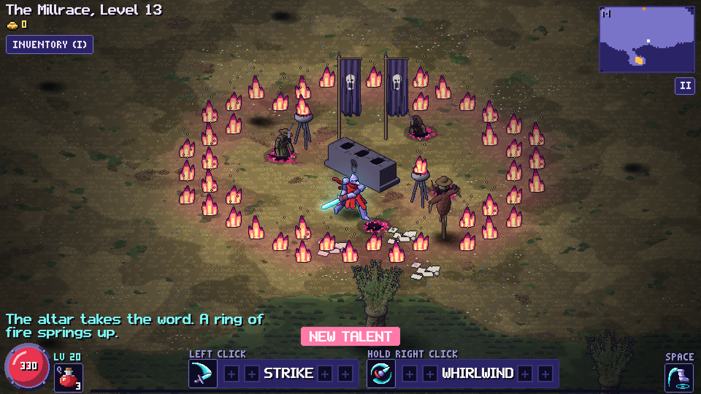

Strongholds on every endless level. On floors that don't have strongholds of their own, two of the floor's rooms hold the cult's altar. Give it words and the room seals with the cult's fire, and five waves rise out of the floor. Floors 6 to 10 keep their real strongholds. Switched off until you say yes.
The pieces
All painted by the browser game's own cult painters: the altar of the words with its three hollows, the braziers of pink fire, the banner with the shrieking skull, and the fire that bars the way out.

A room, start to finish

Floor 3, endless. The altar waits in an ordinary room. Walk up to it: “Altar: give words to wake it”.

The altar's screen. Lay up to three spare runes, then WAKE THE ALTAR.

Woken. The cult's pink fire stands up in every doorway, and the first wave comes up out of rifts in the floor.

Wave after wave, five in all, each from the floor's own monsters and carrying the runes you gave. More runes make them harder and the reward richer.

Won. Runedust, gear and gold, a stronghold's reward. The fire in the doorways falls.
Where there's no room to seal: a ring of fire
The city's streets (floors 11 and 13) have no rooms that close. There the altar stands on open ground, and when it wakes the fire springs up in a ring around it instead.

Floor 13, endless. The altar in the open, its braziers and banners round it.

Woken: a ring of fire, the cult rising inside it.
How it plays
Two altars on every endless level of floors 1 to 5 and 11 to 20, in rooms off the way in, away from the chained rares and the Bells.
It plays like a stronghold: up to three runes, five waves, the same reward. The fire walls off the room until the last wave is dead.
Leave without waking it and your runes come back to you.
Your call
Tell me in the chat to switch them on, or what to change.